A spoken presentation. The picture after each pair shows a point the words already made.
The old temples are gone. The old acts are not. If you came for a tour of dead statues, you are in the wrong room. The Bible names a crowd of gods. One of them is still worshiped. The rest lost the pole, the priest, and the building. What the law protects now is not a carved Baal. It is what those cults did.
Jonathan Cahn says the cults died and the descriptions did not. This talk tests that. First half, the gods, from Scripture. Second half, the practices, from the records and from the laws that shelter them.
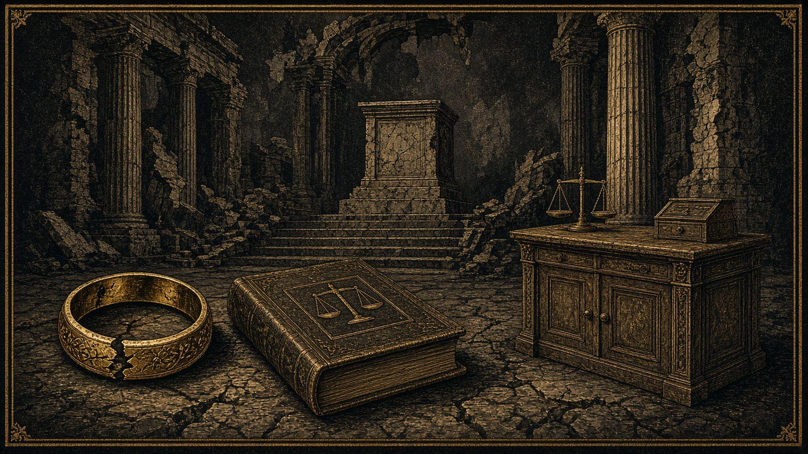
The God of Israel is not a relic. His name, YHWH, is written more than six thousand times. Jews still pray it. Christians worship Him as the Father of Jesus Christ. That is the one named God in the Book who still has a people, a prayer, and a public confession.
Everyone else on this list is a rival the prophets were told to smash. Hold that. The count is lopsided on purpose.
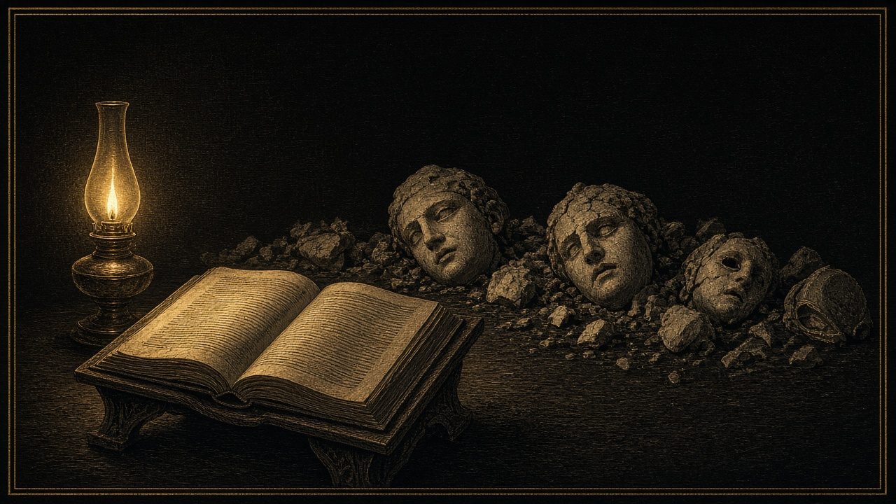
The Bible does not teach Islam. It never names Muhammad, the Quran, Mecca, or a Muslim. Islam begins centuries later. Muhammad dies in 632. The New Testament was already finished. There is no verse that lays out the pillars, the denial of the Son, or a prophet from Arabia.
What the Book does say is about Ishmael, Abraham’s son by Hagar. God says He will make him a great nation, the father of twelve princes. That is a people. It is not a sketch of a later religion. The text stops. It does not build a mosque.
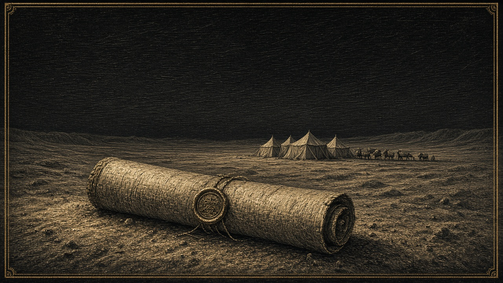
Two passages get dragged in to force Muhammad into the Book. Moses promised a prophet like himself, from among their brothers, and said God would put His words in that prophet’s mouth. Peter stands in Jerusalem and says that prophet is Jesus. The brothers in that sentence are Israel. Jesus promised another Helper. John says the Helper is the Holy Spirit, the one who glorifies Jesus. He is not a man born five centuries later.
Islam’s own book denies that God has a Son, and it denies that Jesus was killed on the cross. John says the person who denies the Son does not have the Father. Paul says if anyone preaches another gospel, let him be accursed. Arabic-speaking Jews and Christians were already saying Allah, because that is the Arabic word for God. The word is not the religion. Denying the cross is a different gospel.
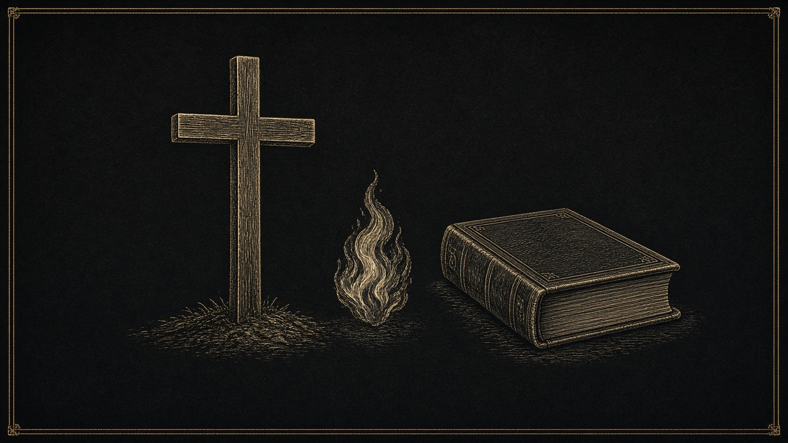
Baal means lord, owner, master. He is named about eighty times. Israel walked off the Lord and into Baal as soon as Joshua’s generation died. Gideon cut the altar down. Elijah faced the prophets who cut themselves on Carmel until the blood poured. Fire fell on the Lord’s sacrifice. Jehu turned Baal’s pillar into a latrine. No nation still runs that temple. A few private pagans picked the name back up. That is a hobby. It is not a culture with courts behind it.
Asherah is the goddess set beside him, and she is also the wooden pole. The name and the poles come up about forty times. God’s order was simple. Cut them down. Josiah burned the one Manasseh had set inside the Lord’s house and beat it to dust. Ashtoreth is the Bible’s name for the sex-and-war goddess the nations called Ishtar. Her public cult died. Her job did not. That is the second half of this talk.
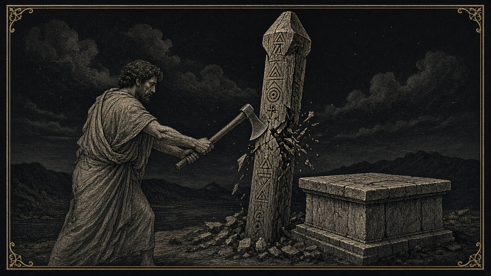
Molech’s worship was the burning of children. Leviticus says you shall not give any of your children to him. The man who does it is to be put to death, and the nation that shuts its eyes is cut off with him. Josiah defiled the pit in the Valley of Hinnom so no one would make a son or a daughter pass through the fire. Nobody in a Western capital bows to a bronze Molech and beats drums so the crowd will not hear. The fire pit is gone. The handing over of the child is not.
The smaller names are dead as cults. Milcom is a mixed oath, God’s name on the lips and another god in the swear. Chemosh is named eight times, and the king of Moab, losing the battle, burned his oldest son on the wall to buy a result. Dagon fell on his face before the ark. They set him back up. The next morning his head and both hands were cut off on the threshold. Tammuz is one verse: women weeping at the temple gate. The Queen of Heaven is the one who shows the trick. The refugees tell Jeremiah they will keep the cakes and the drink offerings, because when they did it they had food, and when they stopped they had nothing. They do not argue that she is the true God. They argue that the rite kept them safe, and they will not give it up.
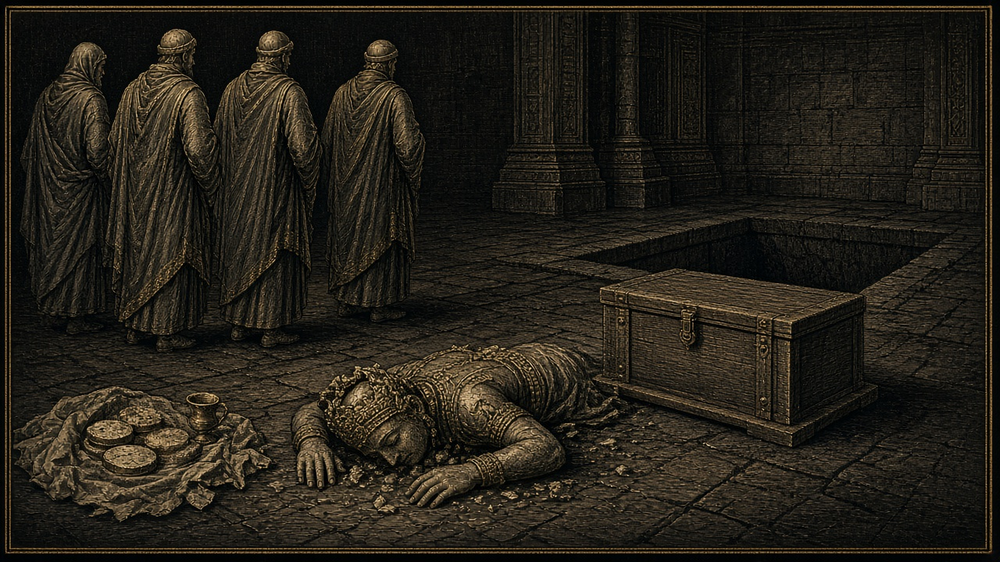
Bel and Nebo are baggage on a cart. The gods planted in Samaria are named once, and two of them received children in the fire. Egypt’s gods are judged as a class. The Book does not stop to catalog them. Zeus and Hermes get one scene in Lystra, and Paul tears his clothes and says turn from these empty things. Artemis gets a riot in Ephesus, because the silver shrines were the trade and the city’s name. Those civic cults are museum pieces.
Here is the count, said out loud. The God of Israel, thousands of times, still worshiped. Baal about eighty. Asherah about forty. Molech about ten. Chemosh eight. Tammuz once. Zeus, Hermes, and Artemis, one scene each. Islam is not on the list at all. The statues fell. That is not the end of the question. The charge was never only that the wood was carved. It was what the worshipers did with their bodies and with their children, and how hard they defended those acts as the life of the people.
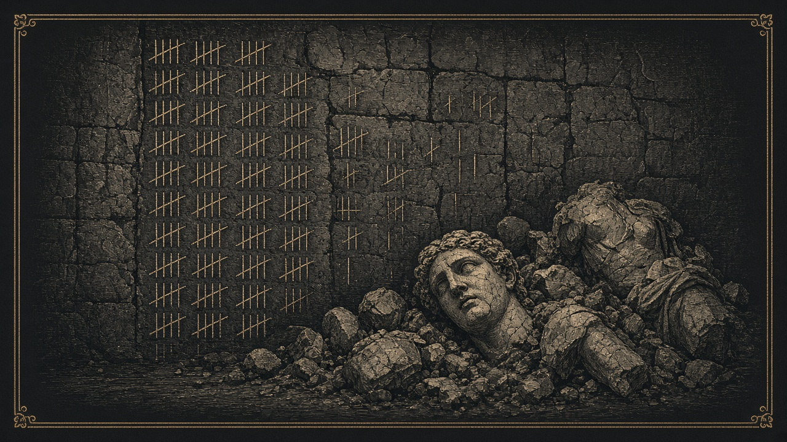
Eight practices define this cult complex. Seven of them now have a legal shelter in the West. The eighth, the named altar, does not, because nobody is keeping it. Cahn calls the three principal spirits Baal the possessor, Ishtar the enchantress, and Molech the destroyer. The verses are older than his book. The court cases are newer. Set them side by side.
Baal’s work was to take a people who had known the Lord and put a different master over ordinary life. America did not put a statue in the schoolyard. It emptied the public school of prayer and of Bible reading. Engel, 1962. Schempp, 1963. And it called the emptiness a right. The Lord’s name became the awkward thing. Into a cleared house, other spirits move. The prophets did not ask for neutrality toward Baal. They said cut the pole down.
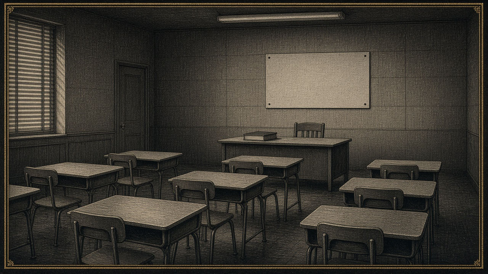
The Bible does not call shrine sex romance. It calls it cult prostitution, men and women set apart for the worship. Josiah tore their quarters out of the Lord’s own temple, the rooms where the hangings for Asherah were woven. That temple duty is not the law of any American state. What is the law is the thing the shrine was selling. Sex pulled off the marriage covenant and treated as the adult’s right. Since Lawrence in 2003, private adult sex is not a crime. The culture does not fine it. It advertises it. The bed is no longer the covenant. The bed is the god.
Do not hunt the old label and then announce the act is gone. Brothers do not say they are headed to a cult prostitute. They say they are going to the temple for a blessing. A meeting hall called a temple is not, by itself, bought sex. Swarthmore built a windowless Temple in 1906 for a tapping ritual, a Bible, and a key. When the sex is real, it uses those same two words. In eighteenth-century Scotland the Beggar’s Benison, the beggar’s blessing, met in a room they called the temple, and a man was not in the order until he had performed a sex act in front of the brothers. Women were hired for the meeting. There is no honest count of countries. The orders do not file the rite as prostitution. The empty count is the disguise. Where the woman cannot refuse, a court has already called it a crime. NXIVM made sexual servitude the price of the inner rank, and the man who ran it was convicted.
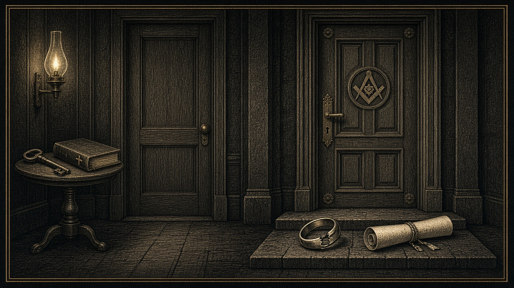
Ishtar’s own hymn puts desire and profit in the same breath, and it says turning a man into a woman and a woman into a man belongs to her. She dresses the young women as men and the young men as women. She puts the spindle in the man’s hand and the weapon in the woman’s. The modern trade in pictures and film of people having sex is legal adult commerce unless a court calls it obscene. Sexual images of children are not in that shelter. That is a different sin, and the state still punishes it. The parade that celebrates the flip, men presented as women and women as men, is protected speech and assembly. In 2015 the marriage law was rewritten around it. In 2020 the job law was rewritten around it.
A later goddess cult in the same family had priests who cut the male body and walked dressed as women. The adult version now is hormones and surgery, legal, and fenced by those same rules. For children, Britain and Sweden pulled the medical version back, because the doctors could not show it was safe. The hymn did not wait for a trial. It simply announced that the flip was hers.
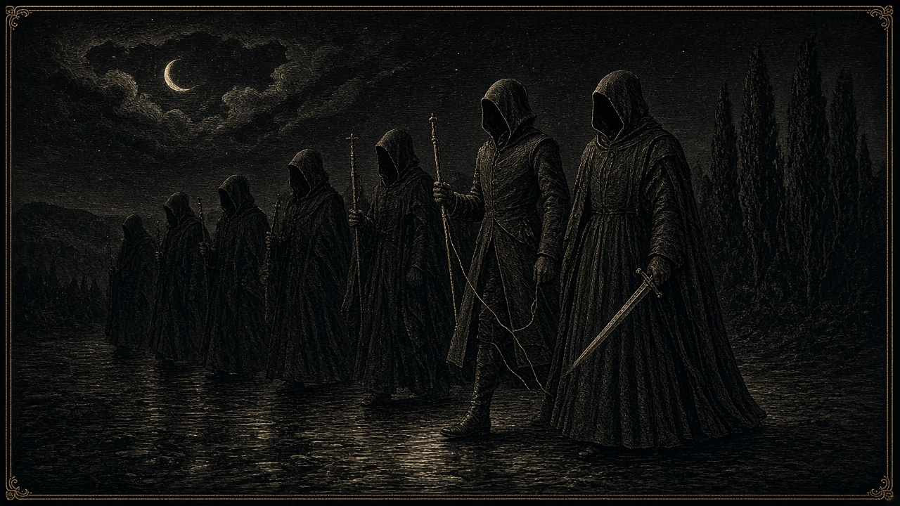
Deuteronomy 18 puts divination, fortune-telling, spells, mediums, and talking to the dead in the same sentence as burning sons and daughters. That is one culture, not two. Pew found that a quarter of American adults believe the stars steer a life. More than one in four believe in spiritual energy in trees, mountains, or crystals. The shop sells it in daylight. Nobody is jailing the astrologer.
Molech is the bottom of the pit. The parents handed over sons and daughters. Jeremiah says they did it on Baal’s high places too, a thing that never entered God’s mind. The fire, the drum, and the idol are gone. The killing of the child in the womb, with the parent’s consent and the public’s permission, is abortion. Roe made that a national right in 1973. Dobbs in 2022 said the Constitution contains no such right and sent the question back to the states. Where a state still permits it, the culture calls the killing care. The charge does not need the god’s name on the door. It needs the child, the parent, and a nation willing to look away.
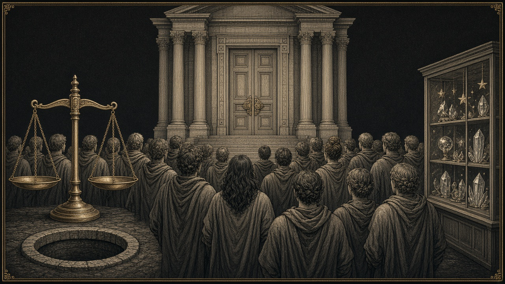
What did not come back is the furniture. No Asherah pole beside a courthouse. No Dagon set up for trophies. No one is openly burning a born child to a statue named Molech. Baal’s prophets are not cutting themselves on a mountain as the state religion. The names fell. The mass culture did something quieter. It kept the acts and retired the labels.
Ephesus shows the mechanism, and it is plain. Demetrius does not open a theology debate. He tells the craftsmen that the silver shrines of Artemis are the trade that makes them rich, and that the preaching is a threat to the business and to the goddess the whole city worships. The crowd does not chant a creed. For two hours it chants that their Artemis is great. Today the captions are different. Privacy. Healthcare. Equality. Speech. The right to be left alone. Under those captions sit the emptied school, the sex trade, the parade, the remade body, the fortune-teller, and the legal killing of the child in the womb. Ephesus would have understood the argument. It would not have understood why anyone pretended the goddess had left.
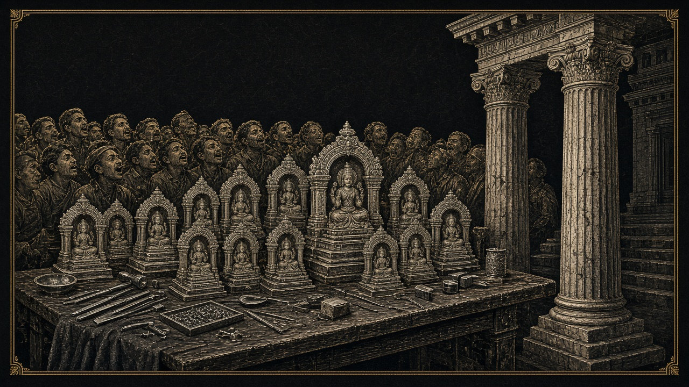
So say the answer without a soft landing. We are not protecting Baal’s statue. We are protecting Baal’s work, Ishtar’s parade, and Molech’s bargain. Seven of the eight acts have a shelter. The named altar is the one we are not holding in public. The shrine sex that buys a man’s standing is the part still hidden under the words temple and blessing.
If you only search for the old name, you will go home and say the gods are dead. They dropped the name. They kept the description. And they passed laws to punish the person who calls those works what the Scriptures call them.
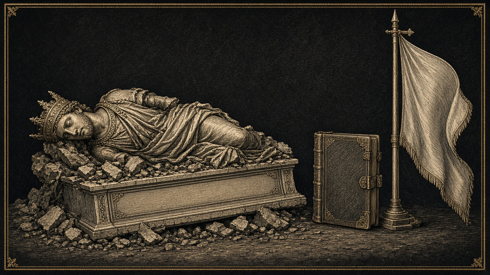